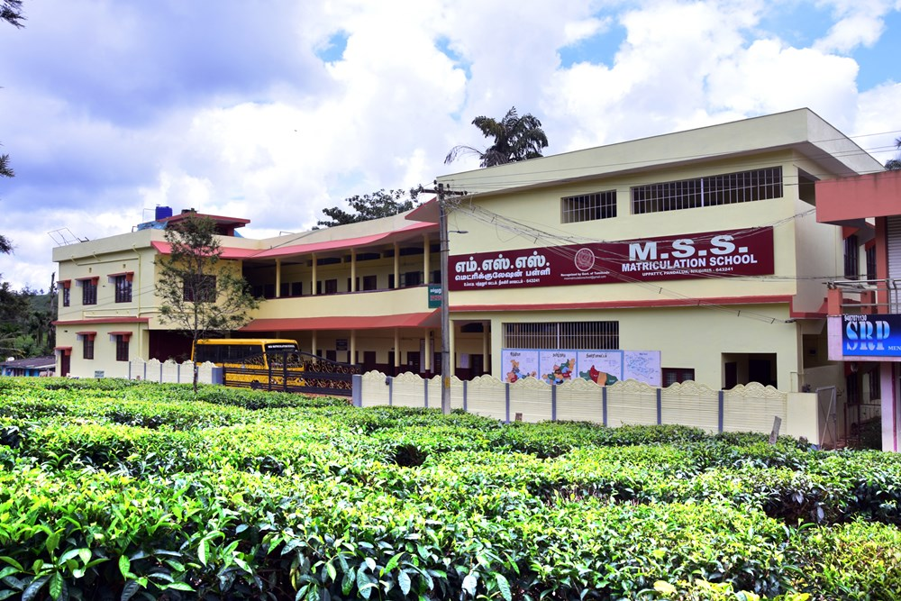
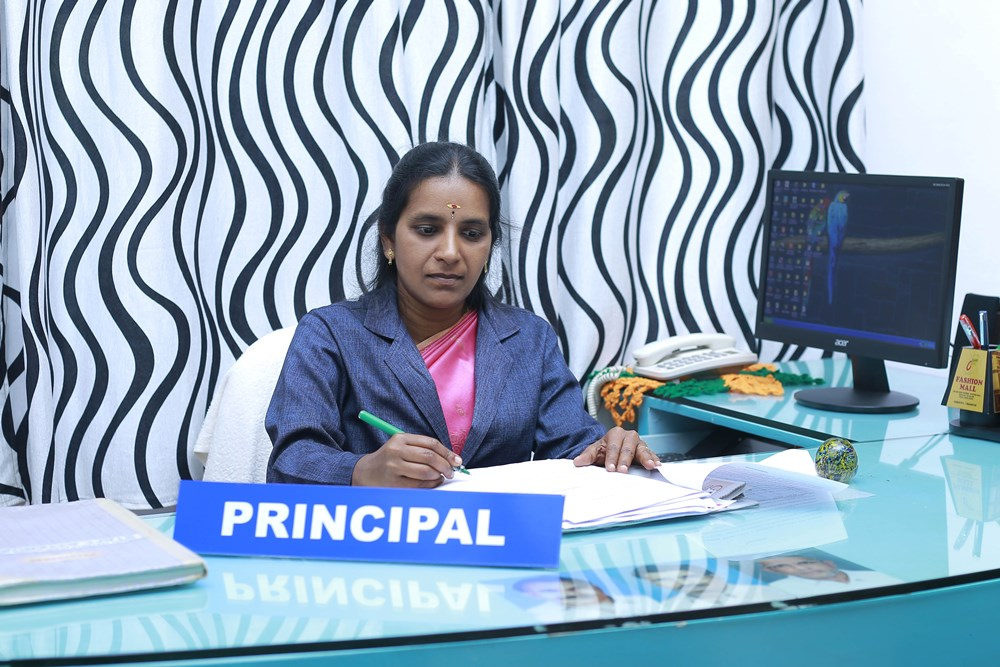
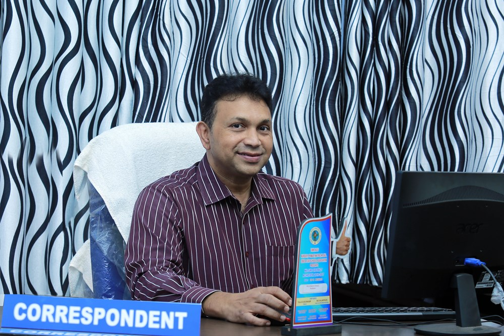
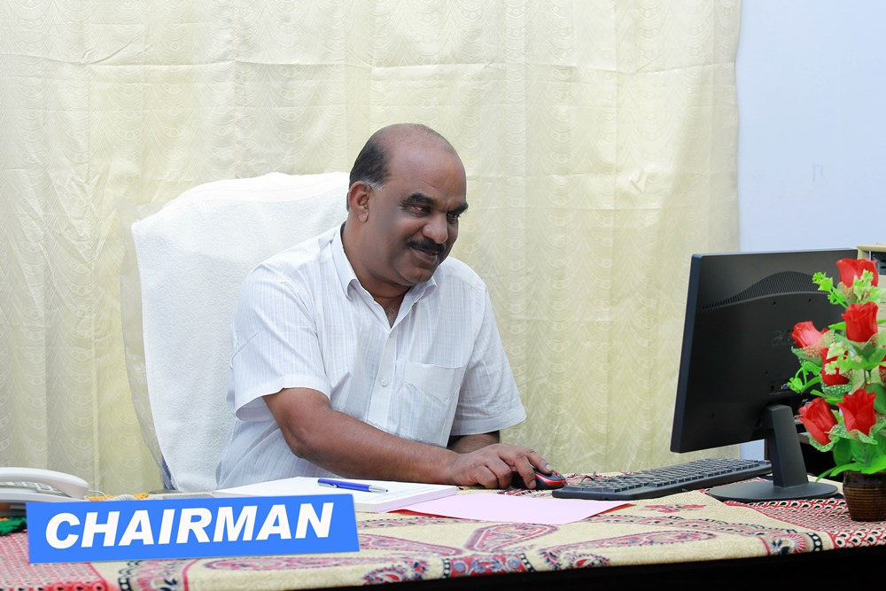

Three decades of nurturing young minds with quality education, character formation, and holistic development.
Our Story
MSS Matriculation School was established in 1992 at Uppatty, Pandalur Block, The Nilgiris District, Tamil Nadu. It is a co-educational institution managed by M.S.S Trust (Minority Service Society) under the auspices of Uppatty Juma Masjid Committee.
Started as an English medium nursery and primary school, it grew into a full Matriculation school in the year 2000. The medium of instruction is English with Hindi and Malayalam also included.
Our institution is situated in the midst of serene and lush greenery, providing an ideal environment for learning and growth.

"Quality Education and Character Formation" — Our school provides student-centric education through modern learning systems bringing out excellence, competencies and citizenship behavior in students, to ensure the genius in every child and create lifelong learners.
Motto: "Learn Lead Achieve" — We inspire a passion for learning and commit ourselves to holistic development of youth, bringing out their full potential, molding morally upright, socially responsible and resourceful citizens.
A well-rounded curriculum developing the total personality of every child
The curriculum develops total personality with equal emphasis on academic as well as physical and creative activities. MSS strictly follows all norms advised by the Government of Tamil Nadu.

📞 9442791922

📞 9443523706

📞 9585929200
Mr. Shajith A P — 📞 9443902085